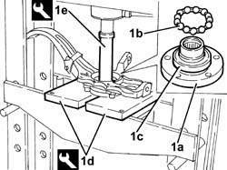
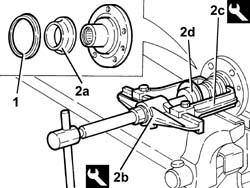
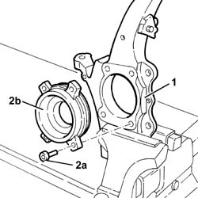

4450C34 bearing of one front wheel hub, l/h or r/h - replace with pillar removed
- Path
- Procedures > 44 SUSPENSION AND WHEELS > 4450 WHEELS AND HUBS > 4450C front wheel hubs > 4450C34 bearing of one front wheel hub, l/h or r/h - replace with pillar removed
- Kind
- repair procedure (removal / refitting; the operation number is the code)
- Applies to
- all engines; all production periods
- Interactive page
- https://sloeber94.github.io/elrnDB-a156/en/#/3238235
Applies to: all engines; all production periods
 Removing
Removing
 Refitting
Refitting1. Remove the wheel hub (1a) complete with bearings (1b) and axial bearing track (1c) from the steering knuckle using the hydraulic press, the half plates (1d) and the tool (1e).
 | Name | Country |
|---|---|---|
1d | Plate | 1.820.019.000 |
| Name | Country |
|---|---|---|
1e | Tool for Extracting/Fitting | 1.870.658.000 |

Applies to: all engines; all production periods
1. Remove the dust cover from the wheel hub.
Remove the radial bearing track from the wheel hub, as necessary, using a suitable chisel. Wear protective goggles.
2. Remove the radial bearing track (2a) using the extractor (2b), the clamps (2c) and a suitable reaction base (2d).
| Name | Country |
|---|---|---|
2b | Extractor | 1.840.005.200 |
| Name | Country |
|---|---|---|
2c | Clamps | 1.840.005.103 |

Applies to: all engines; all production periods
1. Position the steering knuckle in the vice fitted with protective jaws.
2. Undo the bolts (2a) and remove the outer track (2b) for the axial and radial bearings.

Applies to: all engines; all production periods
Refitting
RemovingFit the outer race for the axial and radial bearings and secure it using the bolts.
Fit the radial bearing track using the hydraulic press, a suitable plate and a suitable fitting tool.
Fit the dust cover on the wheel hub.
Fit the wheel hub complete with bearings and axial bearing track using the hydraulic press, a suitable plate and a suitable fitting tool.